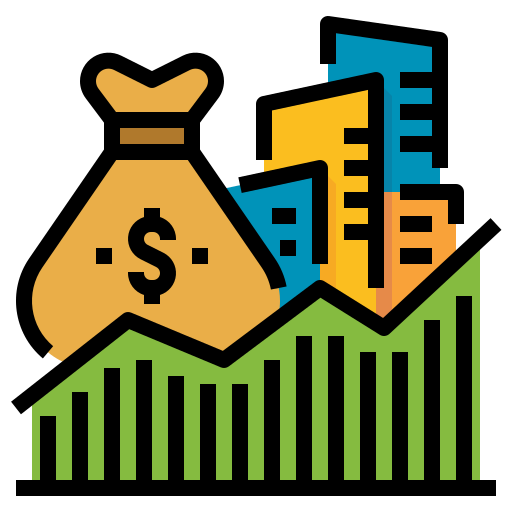

Investasi

Investasi membuka rantai peluang ekonomi:
Lahirnya usaha baru
Terciptanya lapangan kerja
Luasnya kesempatan kerja
Dampak positif: menurunkan pengangguran dan meningkatkan daya beli!
Tahukah kamu? Peningkatan penyerapan tenaga kerja dapat menurunkan angka pengangguran, yang nantinya berdampak positif terhadap kenaikan daya beli masyarakat. Hal ini pada akhirnya dapat memperkuat laju pertumbuhan ekonomi secara keseluruhan. Investasi juga digambarkan sebagai proses menanam modal yang akan berbuah hasil di kemudian hari.